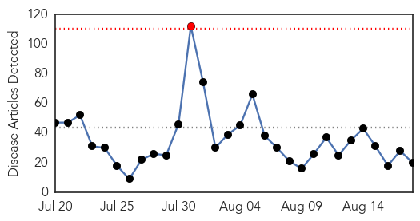
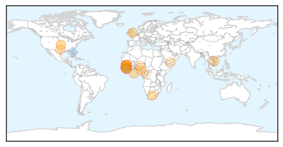
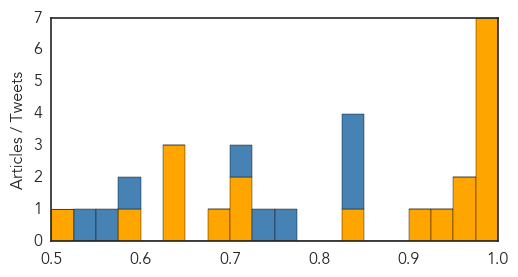

Meningitis
30-Day Web Trend
2 alerts, 0 warnings

30-Day Twitter Trend
2 alerts, 0 warnings

Article Locations

Article Confidences

Top Articles:
- 0.989
- Meningitis C vaccine shortage prompts fears of major outbreak in Africa
- 0.982
- Meningitis C vaccine shortage in Africa
- 0.971
- New meningitis case reported in Highlands
- 0.962
- What to know about meningitis for World Meningitis Day
- 0.935
- Beware of respiratory diseases
- 0.908
- All you need to know about Haj vaccinations
- 0.893
- Sweden confirms meningitis after Japan scout jamboree
- 0.883
- Sweden confirms meningitis after Japan scout jamboree
- 0.866
- Fourth meningitis case as parent of Scout diagnosed with disease
- 0.851
- Three Scottish scouts treated for meningitis after Japan trip
- 0.817
- Vaccination now required for students living on campus
- 0.807
- Sweden confirms meningitis case in girl after Japan scout jamboree
- 0.754
- Swedish officials confirm scout has meningitis
- 0.733
- Swedish scouts treated after meningitis scare
- 0.724
- How a Tick Bite Led to Multiple Limb Amputations for One Oklahoma Woman
- 0.693
- UK meningitis warning after Scottish Scouts catch disease on Japan trip
- 0.687
- Teenage scout diagnosed with meningitis in Stockholm - Radio Sweden
- 0.682
- Sweden suspects meningitis outbreak at scout camp in Japan
- 0.663
- Bottled water buys, chlorine burns follow amoeba discovery
- 0.657
- New vaccine requirements take effect as school begins
- 0.650
- Walk-in clinic allows students to get meningitis vaccine
- 0.643
- Sweden suspects meningitis outbreak at scout camp in Japan - MyNorthwest
- 0.635
- Human health vulnerability to climate change in Ghana
- 0.576
- Cases of meningitis linked to Scout trip rises
- 0.570
- Brain-eating amoeba found in Terrebonne Parish water system, officials say
- 0.558
- Sweden suspects meningitis outbreak at major scout jamboree in Japan
- 0.532
- Amoeba discovered in part of Terrebonne Parish water system
Top Tweets:
-
No tweets found for Aug 18, 2015
Ebola
30-Day Web Trend
1 alerts, 0 warnings

30-Day Twitter Trend
0 alerts, 0 warnings

Article Locations
Article Confidences
Top Articles:
- 0.999
- Last Ebola virus transmission chain announced in Sierra Leone
- 0.998
- Quick, Paper-Based Ebola Test May Help in Remote Areas
- 0.995
- American aid worker stricken with Ebola being treated in US
- 0.994
- Ebola threatens pregnant women - News
- 0.987
- WFP brings critical food relief after Ebola outbreak
- 0.987
- Ebola scares off trainee nurses in Liberia
- 0.987
- Liberia: Ebola-free countdown reaches 35 days
- 0.973
- "We can be proud that the international community rallied to support the efforts to defeat Ebola."
- 0.972
- More Autoclaves to be Installed at Health Facilities - Liberia
- 0.927
- Tackle Nepal’s typhoid problem now
- 0.916
- Remembering Ameyo Adadevoh
- 0.825
- 2-Day Post Ebola Strategy Summit for Sierra Leone ended in Texas
- 0.711
- Strengthening Food Security-Agriculture Trains Stakeholders
- 0.707
- Despite Ebola Crisis, Sierra Leone Priest Speaks of Hope and Peace
- 0.680
- Recognising those facing danger to help others
- 0.647
- Call to protect health workers in conflict zones
- 0.647
- Fitzgibbon Pays Farewell Call on President Koroma
- 0.635
- Fitzgibbon Pays Farewell Call on President Koroma
- 0.593
- Jennifer Doudna Made Editing DNA as Easy as Cut and Paste
- 0.515
- Disease Detective: Shutesbury native heads to the Congo to study epidemics
Top Tweets:
- 0.975
- Africa's Ebola epidemic isn't over yet - Waterloo Record http://t.co/15b7FTmse0 ebola EVD
- 0.972
- As Sierra Leone's Ebola Crisis Ebbs, There's a New Crisis: Food Insecurity - TakePart http://t.co/hpPCfAmktb ebola EVD
- 0.972
- As Sierra Leone's Ebola Crisis Ebbs, There's a New Crisis: Food Insecurity - TakePart http://t.co/hpGbh3qQ7A ebola EVD
- 0.958
- Ebola Scares Off Trainee Nurses in Liberia - Irin http://t.co/dSl3QEChNW ebola EVD
- 0.927
- Breakthrough Ebola Vaccine Provides Hope for West Africa - DOGOnews http://t.co/Rvs3WyOlZp ebola EVD
- 0.892
- RML researchers make strides towards Ebola vaccine - Bitterroot Star http://t.co/y0e2rqoXSR ebola EVD
- 0.837
- Quick, paper-based Ebola test may help in remote areas - WBXH http://t.co/NRKDvwbVbx ebola EVD
- 0.794
- Cette semaine, ThroughSurvivorsEyes suit Isatu Kanu, une survivante d’Ebola et propriétaire d’un… https://t.co/bnUoF0Ihs2
- 0.789
- '25% Of Ebola Survivors May Suffer Blindness' - Leadership Newspapers http://t.co/Ubmie7EEmV ebola EVD
- 0.772
- Ebola Regional Response Plan January-December 2015, Supplementary Appeal 2015 - Reliefweb http://t.co/CWofLk7nxT ebola EVD
- 0.761
- ebola scares off traineenurses in Liberia http://t.co/dk6XYecrrr
- 0.744
- As Sierra Leone's Ebola Crisis Ebbs, There's a New Crisis: Food Insecurity - TakePart http://t.co/chnEmFWSj8
- 0.726
- RT: Sierra Leone has first week of no new Ebola cases...a first since the start of the outbreak http://t.co/6PJVLMUiGz http:/…
- 0.704
- .@USAID seeks to develop strong partnerships in Ebola-affected countries. Learn more: http://t.co/SRUfXUfOfa Ebola
- 0.702
- RT: .@NHA_EPNEWS RT AFD Blog `MJA: Ethical Considerations In Management Of Ebola Virus Disease’ preparedness http:/…
- 0.643
- 18 Aug - news pouch on avianflu avianinfluenza Ebola EbolaResponse MERS is here: http://t.co/nJgDAkG4D3
- 0.638
- Ebola’s LessonsLearned @ForeignAffairs http://t.co/wShjy7bftu
- 0.636
- Liberia. WASH Package in HealthFacilities ebola http://t.co/BL8X1sg5k7
- 0.621
- Paper-based test can quickly diagnose Ebola in remote areas - http://t.co/5WU5I4RBHY http://t.co/41G6D1J20W ebola EVD
- 0.563
- 'CLR01' molecule could block HIV, Hepatitis C and Ebola - http://t.co/1Ah0frKVpe http://t.co/tcTBU0sZLz ebola EVD
- 0.551
- No new Ebola cases reported in SierraLeone in past week for first time since outbreak http://t.co/hUVrZBOWgn
- 0.536
- Breakthrough Ebola Vaccine Provides Hope for West Africa - DOGOnews http://t.co/ean3eieHhc